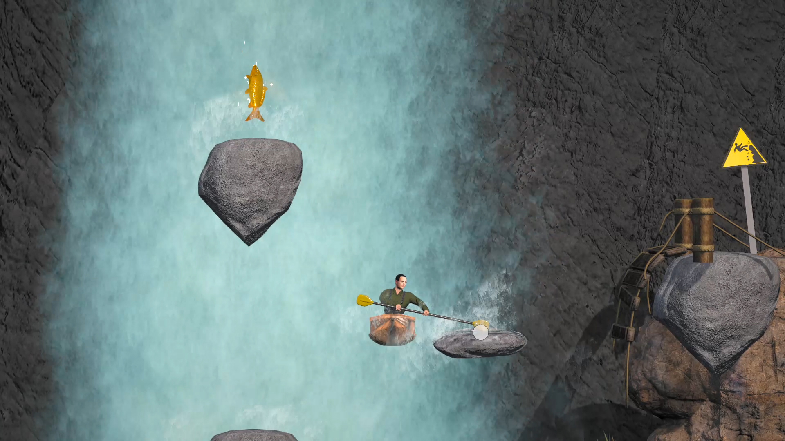
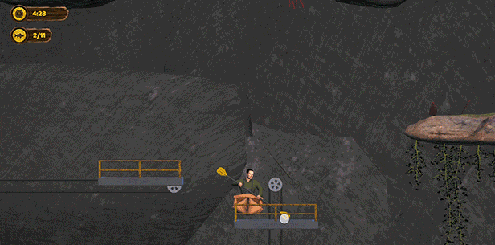
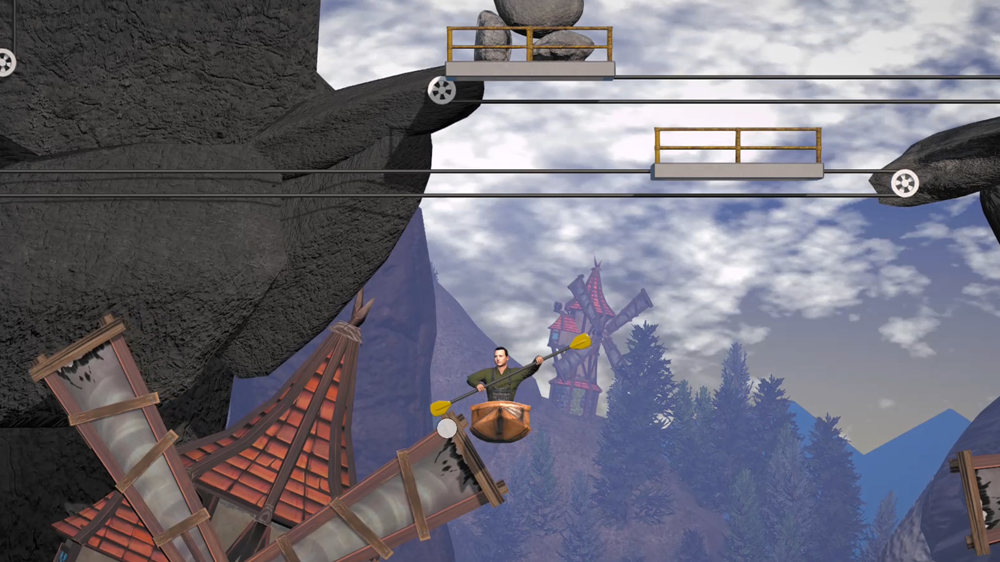

Kayaks Don't Climb



Kayaks Don't Climb is a platforming game similar to Getting Over It. It includes difficult levels as well as collectibles and a leaderboard. Developed alongside Global Game Jam teammates.
Project management, build tools implementation, level design, recorded notes of standups, bug fixes
Unity, Visual Studio
Figuring out the mechanics, as well as solving complex bugs
No new lessons learned. Mostly a renewal of the idea of working on a team vs working alone.
Touchscreen support, co-op, more levels, additional bug fixes
Steam Page